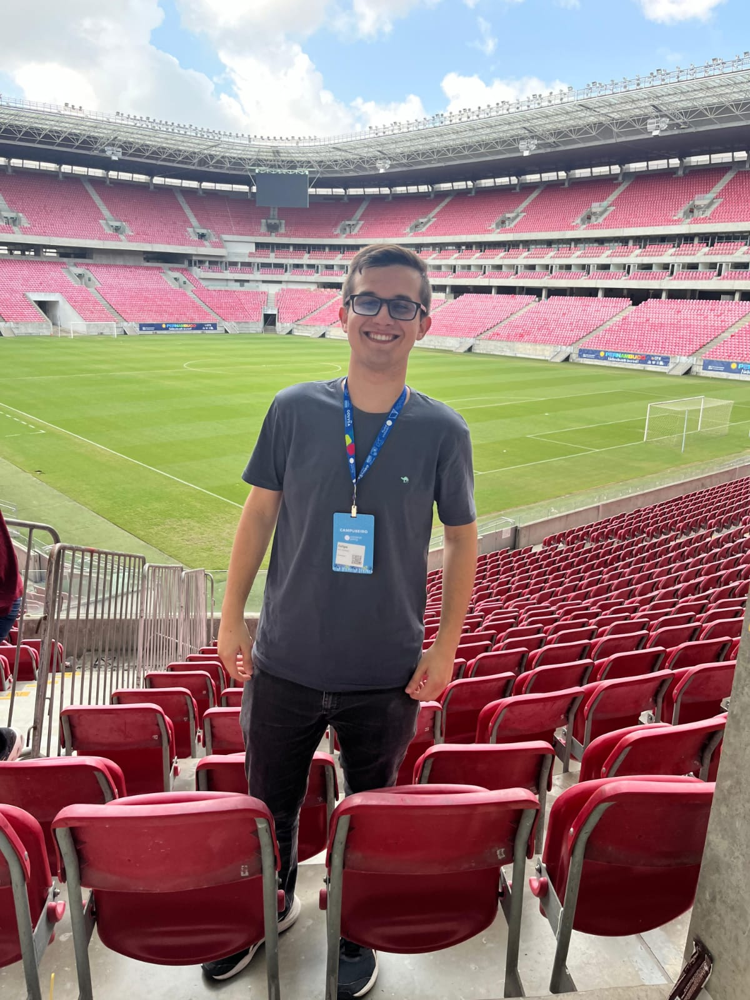
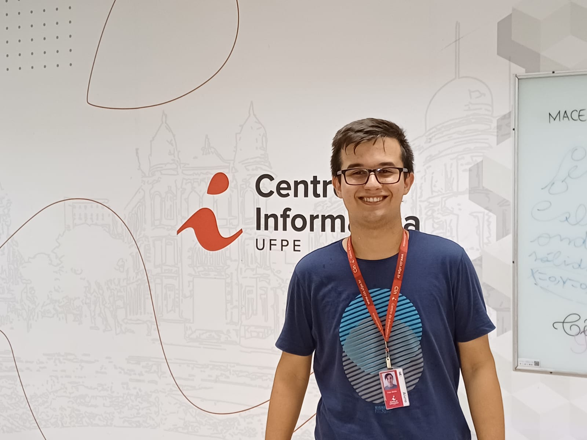

Felipe Mateus Falcão Barreto é estudante de Engenharia da Computação da Universidade Federal de Pernambuco, onde atualmente se encontra no 5º período do curso. O seu primeiro contato com esse ambiente foi ainda jovem, quando teve aulas de robótica com lego. Hoje em dia, no seu tempo livre, ter momentos de diversão com pessoas próximas, tanto amigos quanto familiares, é a forma que Felipe mais gosta de passar seu tempo, seja praticando esportes, vendo filmes ou saindo para comer e conversar.
Sobre
Atividades
Felipe busca se ocupar em várias ativades rotineiras para melhorar profissionalmente, academicamente e pessoalmente. Realiza aulas de francês, encontrando-se no nível B1 do curso. Além disso, participa de aulas voluntárias de matemática voltadas ao ENEM. Por fim, é monitor das disciplinas de Sistemas Digitais e Infraestrutura de Software na Universidade.
Projetos
Ao longo de sua jornada acadêmica, Felipe realizou vários projetos, sendo entre eles: